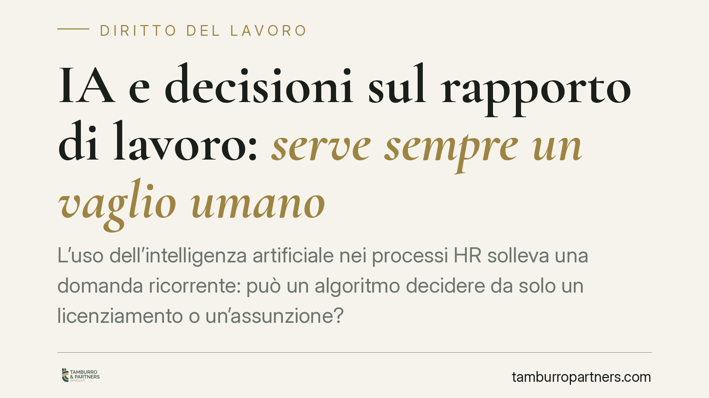

IA e decisioni sul rapporto di lavoro: serve sempre un vaglio umano
L'uso dell'intelligenza artificiale nei processi HR solleva una domanda ricorrente: può un algoritmo decidere da solo un licenziamento o un'assunzione? Il quadro normativo vigente – tra GDPR, AI Act e Decreto Trasparenza – impone che le decisioni rilevanti sul rapporto di lavoro mantengano un intervento umano effettivo. Vediamo cosa prevede oggi il diritto applicabile e quali accorgimenti pratici ne derivano per i datori di lavoro.

Il problema: supporto algoritmico o automatismo puro
Molte aziende utilizzano strumenti di intelligenza artificiale per filtrare candidature, misurare la produttività, segnalare criticità disciplinari o costruire valutazioni periodiche. È un uso legittimo, purché resti chiara una distinzione fondamentale.
Un conto è l'IA come supporto: il sistema elabora dati, propone una graduatoria o evidenzia anomalie, ma la decisione resta in capo a una persona. Un altro conto è l'automatismo decisionale puro: il provvedimento – assunzione, sanzione, recesso – scaturisce direttamente dall'output della macchina, senza un reale intervento umano. È qui che il diritto vigente pone limiti precisi.
Inquadramento normativo
Il riferimento di partenza è l'art. 22 del Regolamento (UE) 2016/679 (GDPR), che riconosce all'interessato il diritto di non essere sottoposto a una decisione basata unicamente su un trattamento automatizzato, quando produce effetti giuridici che lo riguardano o incide in modo analogo in maniera significativa. Un licenziamento o la mancata assunzione rientrano con evidenza in questa categoria.
Si aggiunge il Regolamento (UE) 2024/1689 (AI Act), che classifica come ad alto rischio i sistemi di IA impiegati per la selezione del personale e per le decisioni su promozioni, cessazione del rapporto o valutazione delle prestazioni (Allegato III). Per questi sistemi sono previsti obblighi stringenti, tra cui la sorveglianza umana (art. 14): le persone fisiche incaricate devono poter comprendere l'output, non fidarsene acriticamente e, se necessario, discostarsene.
Sul piano interno rileva infine l'art. 1-bis del D.Lgs. 152/1997 (come modificato dal cd. Decreto Trasparenza), che impone al datore di informare lavoratori e rappresentanze sull'uso di sistemi decisionali o di monitoraggio automatizzati incidenti sul rapporto di lavoro.
Da questo quadro – vigente e verificabile – emerge un principio costante: la decisione che tocca lo status del lavoratore deve essere riconducibile a una valutazione umana effettiva, non a una mera ratifica formale dell'esito algoritmico.
Decisione umana «effettiva» e non apparente
Il punto delicato è proprio la differenza tra un vaglio reale e una convalida di facciata. Non basta che un dirigente apponga una firma su una proposta generata dal sistema. Occorre che chi decide disponga dei dati rilevanti, comprenda la logica dell'output, possa contestarlo e abbia la possibilità concreta di giungere a una conclusione diversa.
Un provvedimento adottato in violazione del divieto di decisione esclusivamente automatizzata è esposto a profili di invalidità. A seconda delle circostanze, potrà discutersi di nullità per violazione di norma imperativa (art. 1418 c.c.) e, in materia di licenziamento, delle tutele applicabili secondo il regime vigente (art. 18 della L. 300/1970 o D.Lgs. 23/2015, in funzione della data di assunzione). L'esito dipende dal caso concreto e dalla qualificazione del vizio.
Implicazioni pratiche per il datore di lavoro
In caso di contenzioso, l'onere della prova della correttezza del procedimento tende a gravare sul datore. Dovrà quindi essere in grado di dimostrare che la decisione non è stata rimessa alla sola macchina, ma è passata attraverso un esame umano documentato. L'assenza di tracce di questo vaglio indebolisce la posizione difensiva, a prescindere dalla fondatezza sostanziale del provvedimento.
Questo riguarda tutte le fasi del rapporto: non solo il recesso, ma anche selezione, assegnazione di incarichi, valutazioni e sanzioni disciplinari gestite con il supporto di strumenti automatizzati.
Cosa fare in concreto
- Mappare i processi HR in cui intervengono sistemi di IA o algoritmi, distinguendo tra funzioni di supporto e passaggi potenzialmente decisori.
- Documentare il vaglio umano: verbalizzare chi ha deciso, sulla base di quali elementi e con quale margine di valutazione autonoma rispetto all'output del sistema.
- Assolvere gli obblighi informativi verso lavoratori e rappresentanze previsti dal Decreto Trasparenza, con informative chiare e aggiornate.
- Formare il personale che utilizza questi strumenti, affinché l'intervento umano sia sostanziale e non una ratifica automatica.
- Adottare o rivedere una policy interna sull'uso dell'IA nei processi decisionali, con responsabilità definite e procedure di controllo.
È opportuno rivedere con attenzione le procedure di selezione, valutazione e recesso che si avvalgono di strumenti automatizzati, per assicurarne la conformità al quadro normativo attuale.
---
Contributo informativo a cura di Tamburro & Partners - Avv. Giuseppe Tamburro. Non costituisce parere legale.
Ogni storia di lavoro ha i suoi tempi.
Se gestisci HR e vuoi un confronto su contenzioso, ispezioni o licenziamenti, scrivi allo studio. Ti rispondiamo entro un giorno lavorativo.